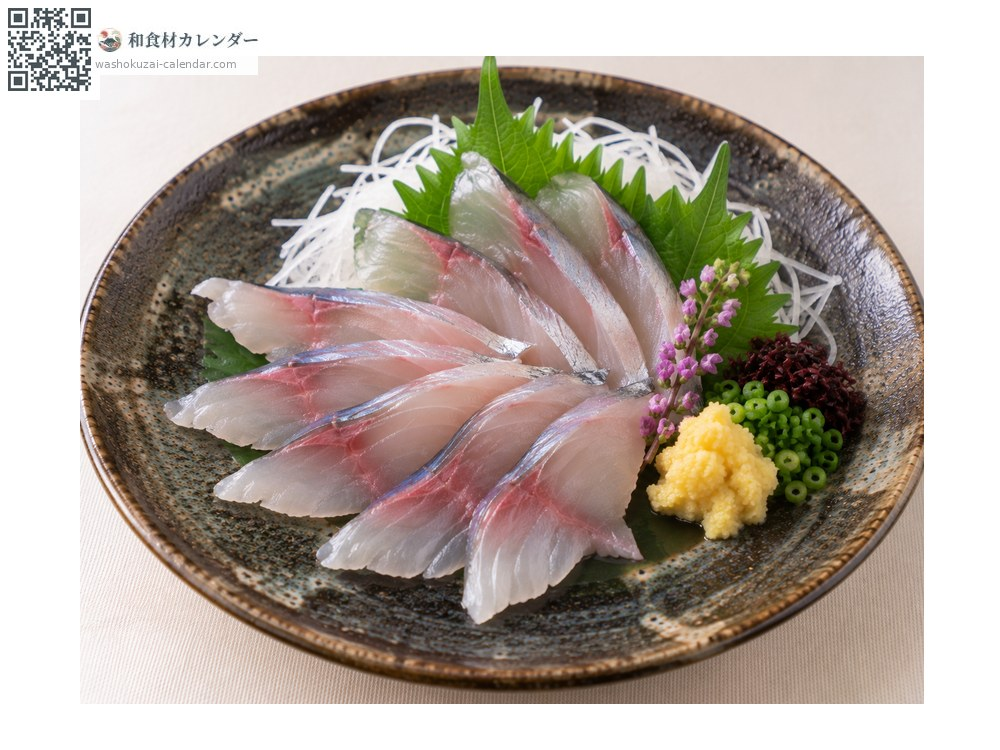
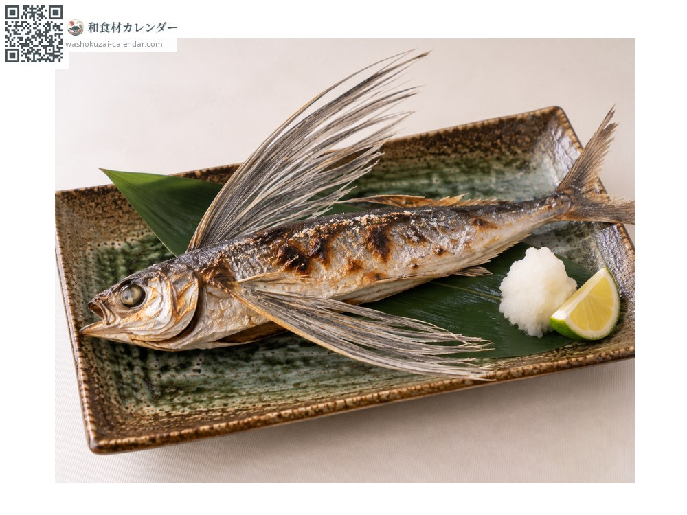
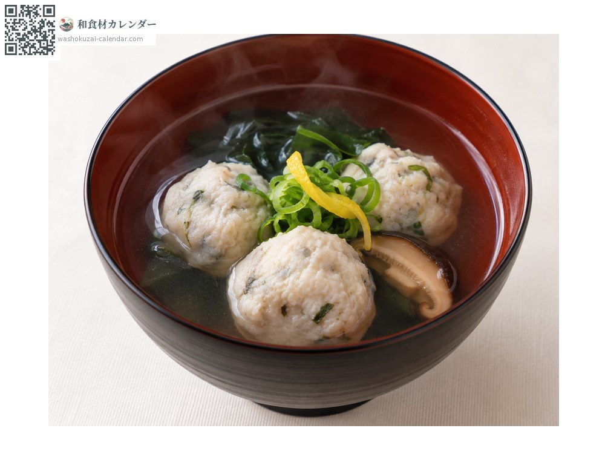
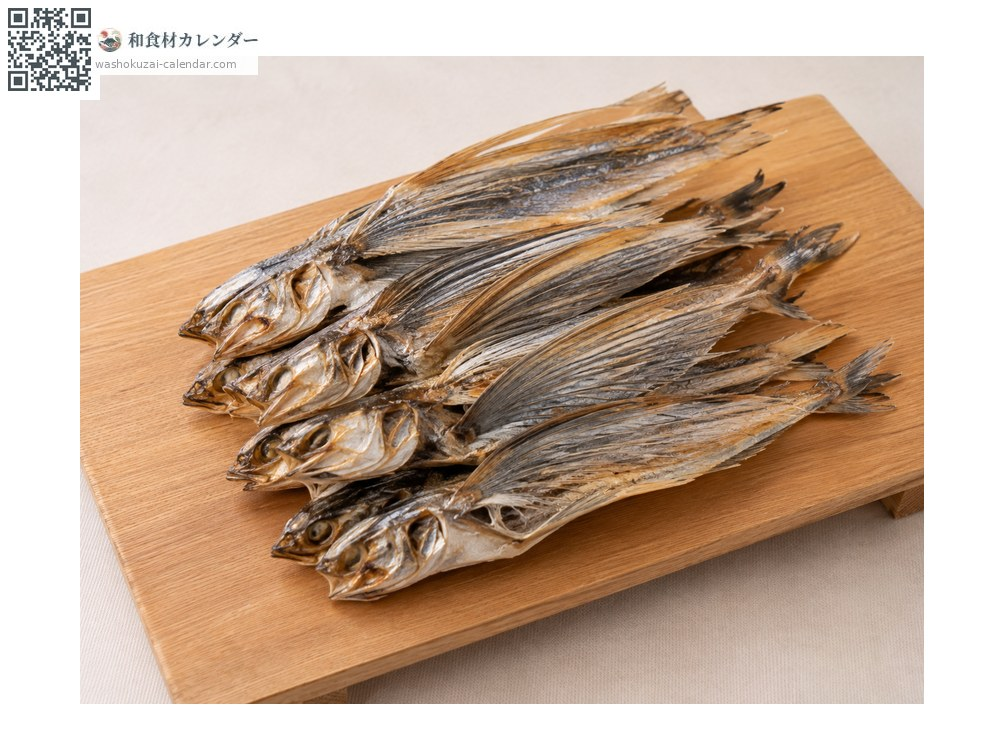

อาหารทะเล
ปลาบิน
トビウオ とびうお tobiuo
ชื่ออื่นtobiuo, ago
อร่อยที่สุดในเดือน พ.ค., มิ.ย., ก.ค.

ช่วงที่อร่อยที่สุด
ม.ค.
ก.พ.
มี.ค.
เม.ย.
พ.ค.
มิ.ย.
ก.ค.
ส.ค.
ก.ย.
ต.ค.
พ.ย.
ธ.ค.
ช่วงอร่อยที่สุดมีจำหน่าย
วิธีปรุง

ซาชิมิ
มันน้อยรสสะอาด เข้ากับซีอิ๊วขิงหรือมิโซะน้ำส้ม

ย่างเกลือ
เนื้อแน่น ย่างด้านหนังให้หอม

ลูกชิ้นปลา
สับปั้นเป็นลูกชิ้น เด้งดีเหมาะกับซุป

ยากิอาโงะ (ย่างแล้วตากแห้ง)
ย่างแล้วตาก ที่คิวชูถือเป็นวัตถุดิบสำคัญของน้ำซุปโซนิและอุด้ง
วิธีเลือก
ลำตัวเป็นประกายสีเงิน ครีบอกไม่ฉีกขาด ตาใสและท้องแน่น
วิธีเก็บรักษา
เสียเร็ว ควรจัดการภายในวันเดียวกัน หากทำเป็นปลาแห้งจะเก็บได้นาน
แหล่งผลิตหลัก
เกร็ดน่ารู้
ที่คิวชูเรียกว่า อาโงะ เมื่อย่างแล้วตากแห้งจะเป็นวัตถุดิบน้ำซุปชั้นดี มันกางครีบอกร่อนเหนือผิวทะเลได้หลายร้อยเมตร